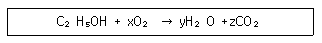
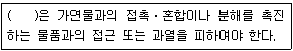
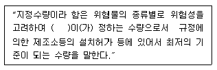

위험물산업기사 (2015-09-19 기출문제)
1과목: 일반화학
1. 다음은 에탄올의 연소반응이다. 반응식의 계수 x, y, z 를 순서대로 옳게 표시한 것은?

- 4, 4, 3
- 4, 3, 2
- 5, 4, 3
- 3, 3, 2
(정답률: 87%)

2. 촉매하에 H2O의 첨가반응으로 에탄올을 만들 수 있는 물질은?
- CH4
- C2H2
- C6H6
- C2H4
(정답률: 69%)
3. 다음 중 수용액의 pH 가 가장 작은 것은?
- 0.01N HCI
- 0.1N HCI
- 0.01N CH3COOH
- 0.1N NaOH
(정답률: 84%)
4. 어떤 용기에 산소 16g 과 수소 2g 을 넣었을 때 산소와 수소의 압력의 비는?
- 1:2
- 1:1
- 2:1
- 4:1
(정답률: 77%)
5. 1패러데이(Faraday)의 전기량으로 물을 전기분해하였을 때 생성되는 수소기체는 0℃, 1기압에서 얼마의 부피를 갖는가?
- 5.6L
- 11.2L
- 22.4L
- 44.8L
(정답률: 79%)
6. 다음 중 헨리의 법칙이 가장 잘 적용되는 기체는?
- 암모니아
- 염화수소
- 이산화탄소
- 플루오르화수소
(정답률: 80%)
7. 방사선 중 감마선에 대한 설명으로 옳은 것은?
- 질량을 갖고 음의 전하를 띰
- 질량을 갖고 전하를 띠지 않음
- 질량이 없고 전하를 띠지 않음
- 질량이 없고 음의 전하를 띰
(정답률: 80%)
8. 벤젠에 관한 설명으로 틀린 것은?
- 화학식은 C6H12이다.
- 알코올, 에테르에 잘 녹는다.
- 물보다 가볍다.
- 추운 겨울날씨에 응고될 수 있다.
(정답률: 80%)
9. 휘발성 유기물 1.39g 을 증발시켰더니 100℃, 760mmHg에서 420mL 였다. 이 물질의 분자량은 약 몇 g/mol 인가?
- 53
- 73
- 101
- 150
(정답률: 82%)
10. 원자량이 56인 금속 M 1.12g을 산화시켜 실험식이 MxOy 인 산화물 1.60g을 얻었다. x, y는 각각 얼마인가?
- x = 1, y = 2
- x = 2, y = 3
- x = 3, y = 2
- x = 2, y = 1
(정답률: 85%)
11. 활성화에너지에 대한 설명으로 옳은 것은?
- 물질이 반응 전에 가지고 있는 에너지이다.
- 물질이 반응 후에 가지고 있는 에너지이다.
- 물질이 반응 전과 후에 가지고 있는 에너지의 차이이다.
- 물질이 반응을 일으키는 데 필요한 최소한의 에너지이다.
(정답률: 93%)
12. 요소 6g 을 물에 녹여 1000L 로 만든 용액의 27℃ 에서의 삼투압은 약 몇 atm 인가? (단, 요소의 분자량은 60 이다.)
- 1.26 × 10-1
- 1.26 × 10-2
- 2.46 × 10-3
- 2.56 × 10-4
(정답률: 68%)
13. 어떤 금속의 원자가는 2 이며, 그 산화물의 조성은 금속이 80wt% 이다. 이 금속의 원자량은?
- 32
- 48
- 64
- 80
(정답률: 62%)
14. 산의 일반적 성질을 옳게 나타낸 것은?
- 쓴 맛이 있는 미끈거리는 액체로 리트머스시험지를 푸르게 한다.
- 수용액에서 OH- 이온을 내 놓는다.
- 수소보다 이온화경향이 큰 금속과 반응하여 수소를 발생한다.
- 금속의 수산화물로서 비전해질이다.
(정답률: 73%)
15. 같은 주기에서 원자번호가 증가할수록 감소하는 것은?
- 이온화에너지
- 원자반지름
- 비금속성
- 전기음성도
(정답률: 83%)
16. 아세트알데히드에 대한 시성식은?
- CH3COOH
- CH3COCH3
- CH3CHO
- CH3COOCH3
(정답률: 69%)
17. Mg2+ 의 전자수는 몇 개 인가?
- 2
- 10
- 12
- 6×1023
(정답률: 84%)
18. pH = 12 인 용액의 [OH-]는 pH = 9 인 용액의 몇 배인가?
- 1/1000
- 1/100
- 100
- 1000
(정답률: 70%)
19. 다음 중 1차 이온화 에너지가 가장 작은 것은?
- Li
- O
- Cs
- CI
(정답률: 61%)
20. 다음 물질 중 환원성이 없는 것은?
- 설탕
- 엿당
- 젖당
- 포도당
(정답률: 88%)
2과목: 화재예방과 소화방법
21. 분말소화기에 사용되는 분말소화약제 주성분이 아닌 것은?
- NaHCO3
- KHCO3
- NH4H2PO4
- NaOH
(정답률: 79%)
22. 소화설비의 설치기준에 있어서 위험물저장소의 건축물로서 외벽이 내화구조로 된 것은 연면적 몇 m2 를 1 소요단위로 하는가?
- 50
- 75
- 100
- 150
(정답률: 78%)
23. 일반적으로 고급 알코올황산에스테르염을 기포제로 사용하며 냄새가 없는 황색의 액체로서 밀폐 또는 준밀폐 구조물의 화재 시 고팽창포로 사용하여 화재를 진압할 수 있는 포소화약제는?
- 단백포소화약제
- 합성계면활성제포소화약제
- 알코올형포소화약제
- 수성막포소화약제
(정답률: 80%)
24. 위험물안전관리법령상 정전기를 유효하게 제거하기 위해서는 공기 중의 상대습도는 몇 % 이상 되게 하여야 하는가?
- 40%
- 50%
- 60%
- 70%
(정답률: 92%)
25. 위험물안전관리법령상 분말소화설비의 기준에서 가압용 또는 축압용 가스로 사용이 가능한 가스로만 이루어진 것은?
- 산소, 질소
- 이산화탄소, 산소
- 산소, 아르곤
- 질소, 이산화탄소
(정답률: 83%)
26. 분말소화약제 중 열분해 시 부착성이 있는 유리상의 메타인산이 생성되는 것은?
- Na3PO4
- (NH4)3PO4
- NaHCO3
- NH4H2PO4
(정답률: 68%)
27. 위험물제조소등에 “화기주의” 라고 표시한 게시판을 설치하는 경우 몇 류 위험물의 제조소인가?
- 제1류 위험물
- 제2류 위험물
- 제4류 위험물
- 제5류 위험물
(정답률: 51%)
28. 위험물안전관리법령상 자동화재탐지설비를 반드시 설치하여야 할 대상에 해당되지 않는 것은?
- 옥내에서 지정수량 200배의 제3류 위험물을 취급하는 제조소
- 옥내에서 지정수량 200배의 제2류 위험물을 취급하는 일반취급소
- 지정수량 200배의 제1류 위험물을 저장하는 옥내저장소
- 지정수량 200배의 고인화점 위험물만을 저장하는 옥내저장소
(정답률: 66%)
29. 이산화탄소를 소화약제로 사용하는 이유로서 옳은 것은?
- 산소와 결합하지 않기 때문에
- 산화반응을 일으키나 발열량이 적기 때문에
- 산소와 결합하나 흡열반응을 일으키기 때문에
- 산화반응을 일으키나 환원반응도 일으키기 때문에
(정답률: 81%)
30. 화재 발생 시 물을 사용하여 소화할 수 있는 물질은?
- K2O2
- CaC2
- Al4C3
- P4
(정답률: 81%)
31. 위험물안전관리법령상 위험물별 적응성이 있는 소화설비가 옳게 연결되지 않은 것은?
- 제4류 및 제 5류 위험물 - 할로겐화합물 소화기
- 제4류 및 제6류 위험물 - 인산염류
- 제1류 알칼리금속 과산화물 - 탄산수소염류 분말소화기
- 제2류 및 제3류 위험물 - 팽창질석
(정답률: 59%)
32. 위험물제조소등에 설치하는 옥외소화전설비에 있어서 옥외소화전함은 옥외소화전으로부터 보행거리 몇 m 이하의 장소에 설치하는가?
- 2m
- 3m
- 5m
- 10m
(정답률: 83%)
33. 하론 1301 소화약제의 저장용기에 저장하는 소화약제의 양을 산출할 때는「위험물의 종류에 대한 가스계 소화약제의 계수」를 고려해야 한다. 위험물의 종류가 이황화탄소인 경우 하론 1301에 해당하는 계수 값은 얼마인가?
- 1.0
- 1.6
- 2.2
- 4.2
(정답률: 45%)
34. 위험물제조소등에 설치하는 이산화탄소 소화설비에 있어 저압식저장용기에 설치하는 압력경보장치의 작동압력 기준은?
- 0.9MPa 이하, 1.3MPa 이상
- 1.9MPa 이하, 2.3MPa 이상
- 0.9MPa 이하, 2.3MPa 이상
- 1.9MPa 이하, 1.3MPa 이상
(정답률: 72%)
35. 제4종 분말 소화약제의 주성분으로 옳은 것은?
- 탄산수소칼륨과 요소의 반응생성물
- 탄산수소칼륨과 인산염의 반응생성물
- 탄산수소나트륨과 요소의 반응생성물
- 탄산수소나트륨과 인산염의 반응생성물
(정답률: 72%)
36. 위험물제조소등에 옥내소화전이 1층에 6개, 2층에 5개, 3층에 4개가 설치되었다. 이 때 수원의 수량은 몇 m3 이상이 되도록 설치하여야 하는가?
- 23.4
- 31.8
- 39.0
- 46.8
(정답률: 89%)
37. 다음은 위험물안전관리법령에서 정한 제조소등에서의 위험물의 저장 및 취급에 관한 기준 중 위험물의 유별 저장 · 취급의 공통기준에 관한 내용이다. ( )안에 알맞은 것은?

- 제2류 위험물
- 제4류 위험물
- 제5류 위험물
- 제6류 위험물
(정답률: 73%)
38. 할로겐화합물의 화학식과 Halon 번호가 옳게 연결된 것은?
- CH2ClBr - Halon 1211
- CF2ClBr - Halon 104
- C2F4Br2 - Halon 2402
- CF3Br - Halon 1011
(정답률: 85%)
39. 1기압, 100℃에서 물 36g 이 모두 기화되었다. 생성된 기체는 약 몇 L 인가?
- 11.2
- 22.4
- 44.8
- 61.2
(정답률: 60%)
40. 스프링클러설비에 대한 설명 중 틀린 것은?
- 초기 화재의 진압에 효과적이다.
- 조작이 쉽다.
- 소화약제가 물이므로 경제적이다.
- 타 설비보다 시공이 비교적 간단하다.
(정답률: 90%)
3과목: 위험물의 성질과 취급
41. 마그네슘의 위험성에 관한 설명으로 틀린 것은?
- 연소 시 양이 많은 경우 순간적으로 맹렬히 폭발할 수 있다.
- 가열하면 가연성 가스를 발생한다.
- 산화제와의 혼합물은 위험성이 높다.
- 공기 중의 습기와 반응하여 열이 축척되면 자연발화의 위험이 있다.
(정답률: 54%)
42. 위험물안전관리법령에서 정한 제1류 위험물이 아닌 것은?
- 질산메틸
- 질산나트륨
- 질산칼륨
- 질산암모늄
(정답률: 76%)
43. 다음 ( ) 안에 알맞은 용어는?

- 대통령령
- 총리령
- 소방본부장
- 시·도지사
(정답률: 84%)
44. 위험물안전관리법령상 간이탱크저장소의 위치·구조 및 설비의 기준에서 간이 저장탱크 1개의 용량은 몇 L 이하이어야 하는가?
- 300
- 600
- 1000
- 1200
(정답률: 66%)
45. 제5류 위험물의 제조소에 설치하는 주의사항 게시판에서 게시판 바탕 및 문자의 색을 옳게 나타낸 것은?
- 청색바탕에 백색문자
- 백색바탕에 청색문자
- 백색바탕에 적색문자
- 적색바탕에 백색문자
(정답률: 62%)
46. 다음 중 물과 반응하여 산소를 발생하는 것은?
- KClO3
- Na2O2
- KClO4
- CaC2
(정답률: 67%)
47. 황린을 물 속에 저장할 때 인화수소의 발생을 방지하기 위한 물의 pH 는 얼마 정도가 좋은가?
- 4
- 5
- 7
- 9
(정답률: 69%)
48. 염소산칼륨에 관한 설명 중 옳지 않은 것은?
- 강산화제로 가열에 의해 분해하여 산소를 방출한다.
- 무색의 결정 또는 분말이다.
- 온수 및 글리세린에 녹지 않는다.
- 인체에 유독하다.
(정답률: 81%)
49. 제1류 위험물 중 무기과산화물 150kg, 질산염류 300kg, 중크롬산염류 3000kg 을 저장하려 한다. 각각 지정수량의 배수의 총합은 얼마인가?
- 5
- 6
- 7
- 8
(정답률: 72%)
50. 물과 반응하였을 때 발생하는 가연성 가스의 종류가 나머지 셋과 다른 하나는?
- 탄화리튬(Li2C2)
- 탄화마그네슘(MgC2)
- 탄화칼슘(CaC2)
- 탄화알루미늄(Al4C3)
(정답률: 64%)
51. 물보다 무겁고 비수용성인 위험물로 이루어진 것은?
- 이황화탄소, 니트로벤젠, 클레오소트유
- 이황화탄소, 글리세린, 클로로벤젠
- 에틸렌글리콜, 니트로벤젠, 의산메틸
- 초산메틸, 클로로벤젠, 클레오소트유
(정답률: 62%)
52. 다음 중 저장하는 위험물의 종류 및 수량을 기준으로 옥내저장소에서 안전거리를 두지 않을 수 있는 경우는?
- 지정수량 20배 이상의 동식물유류
- 지정수량 20배 미만의 특수인화물
- 지정수량 20배 미만의 제4석유류
- 지정수량 20배 이상의 제5류 위험물
(정답률: 72%)
53. 위험물안전관리법령상 1기압에서 제3석유류의 인화점 범위로 옳은 것은?
- 21℃ 이상 70℃ 미만
- 70℃ 이상 200℃ 미만
- 200℃ 이상 300℃ 미만
- 300℃ 이상 400℃ 미만
(정답률: 76%)
54. 위험물 옥내 저장소의 피뢰설비는 지정수량의 최소 몇 배 이상인 저장 창고에 설치하도록 하고 있는가? (단, 제6류 위험물의 저장창고를 제외한다.)
- 10
- 15
- 20
- 30
(정답률: 68%)
55. 다음 물질 중 발화점이 가장 낮은 것은?
- CS2
- C6H6
- CH3COCH3
- CH3COOCH3
(정답률: 54%)
56. 염소산나트륨의위험성에 대한 설명 중 틀린 것은?
- 조해성이 강하므로 저장용기는 밀전한다.
- 산과 반응하여 이산화염소를 발생한다.
- 황, 목탄, 유기물 등과 혼합한 것은 위험하다.
- 유리용기를 부식시키므로 철제용기에 저장한다.
(정답률: 84%)
57. 위험물안전관리법령에서 정한 품명이 나머지 셋과 다른 하나는?
- (CH3)2CHCH2OH
- CH2OHCHOHCH2OH
- CH2OHCH2OH
- C6H5NO2
(정답률: 40%)
58. 염소산칼륨이 고온에서 열분해할 때 생성되는 물질을 옳게 나타낸 것은?
- 물, 산소
- 염화칼륨, 산소
- 이염화칼륨, 수소
- 칼륨, 물
(정답률: 85%)
59. 주거용 건축물과 위험물제조소와의 안전거리를 단축할 수 있는 경우는?
- 제조소가 위험물의 화재 진압을 하는 소방서와 근거리에 있는 경우
- 취급하는 위험물의 최대수량(지정수량의 배수)이 10배 미만이고 기준에 의한 방화상 유효한 벽을 설치한 경우
- 위험물을 취급하는 시설이 철근콘크리트 벽일 경우
- 취급하는 위험물이 단일 품목일 경우
(정답률: 81%)
60. 아밀알코올에 대한 설명으로 틀린 것은?
- 8가지 이성체가 있다.
- 청색이고 무취의 액체이다.
- 분자량은 약 88.15 이다.
- 포화지방족 알코올이다.
(정답률: 60%)
먼저 탄소(C)의 원자 수를 보존하기 위해, 반응물과 생성물에서 탄소의 원자 수를 비교해보면, 반응물 쪽에는 2개의 탄소 원자가 있고, 생성물 쪽에는 1개의 탄소 원자만 있으므로, 생성물 쪽에 있는 탄소 원자의 수를 늘리기 위해, 반응물 쪽에 있는 탄소 원자의 수를 2배로 늘려준다. 이렇게 하면 탄소의 원자 수는 보존된다.
C2H5OH + 3O2 → 2CO2 + 3H2O
다음으로 수소(H)의 원자 수를 보존하기 위해, 반응물과 생성물에서 수소의 원자 수를 비교해보면, 반응물 쪽에는 6개의 수소 원자가 있고, 생성물 쪽에는 6개의 수소 원자가 있으므로, 수소의 원자 수는 보존된다.
C2H5OH + 3O2 → 2CO2 + 3H2O
마지막으로 산소(O)의 원자 수를 보존하기 위해, 반응물과 생성물에서 산소의 원자 수를 비교해보면, 반응물 쪽에는 3개의 산소 원자가 있고, 생성물 쪽에는 5개의 산소 원자가 있으므로, 생성물 쪽에 있는 산소 원자의 수를 줄이기 위해, 생성물 쪽에 있는 산소 원자의 수를 2배로 줄여준다. 이렇게 하면 산소의 원자 수도 보존된다.
C2H5OH + 3O2 → 2CO2 + 3H2O
따라서, 반응식의 계수는 2, 3, 2가 되므로, 정답은 "3, 3, 2"이다.